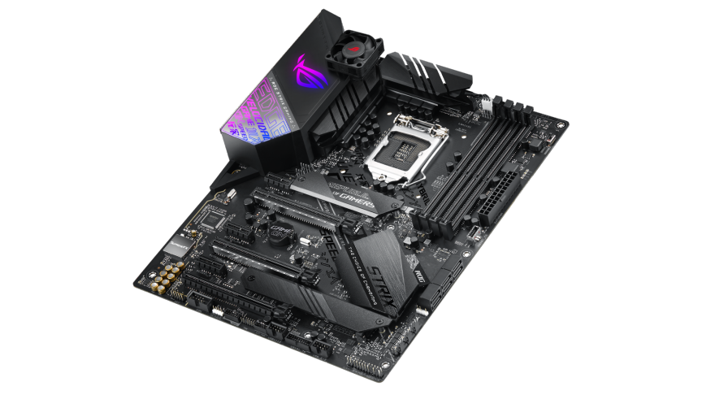
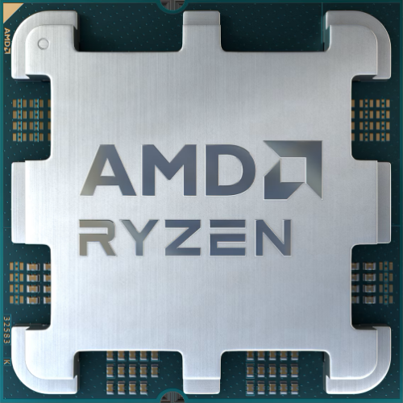

A motherboard is the main circuit board in a computer system. It connects all of the internal components, like the memory, processor, graphics card and other hardware. It also provides power to each component and allows them to communicate with each other.
The CPU is the brain of a computer, containing all the circuitry needed to process input, store data, and output results. The CPU is constantly following instructions of computer programs that tell it which data to process and how to process it.
A graphics processing unit (GPU) is an electronic circuit that can perform mathematical calculations at high speed. Computing tasks like graphics rendering, machine learning (ML), and video editing require the application of similar mathematical operations on a large dataset.

RAM provides the shorter-term memory the CPU needs to open files and move data around as it responds to the tasks given to it by your apps. Both RAM and the CPU work synchronously and complementarily to ensure that your computer's performance fits your needs and you have a good experience when using your device.

Storage is where data is permanently kept on your computer.
There are two types of storage devices a PC can have,
a Solid State Drive(SSD) and/or Hard Disk Drive(HDD)
- Lower cost per GB than SSDs
- Available in high capacities
- Physically larger than SSDs
- Moving parts vulnerable to damage
- Require cabling for data and power
- Require more power than SSDs
- Poor random access latency
- Affordable: SATA SSDs are generally the most affordable type of SSD.
- Widely compatible: SATA SSDs are compatible with most desktops, laptops, and servers.
- Low power consumption: SATA SSDs consume less power than other types of SSDs.
- Limited performance: SATA SSDs have lower read and write speeds compared to other types of SSDs.
- Limited form factors: SATA SSDs are typically only available in 2.5-inch and M.2 form factors.
- High performance: NVMe SSDs offer the highest read and write speeds of any type of SSD.
- Low latency: NVMe SSDs offer lower latency compared to SATA and M.2 SSDs.
- Wide range of form factors: NVMe SSDs are available in M.2, U.2, and PCIe card form factors.
- Expensive: NVMe SSDs are typically more expensive than SATA and M.2 SSDs.
- Limited compatibility: NVMe SSDs may not be compatible with all systems, and some older systems may not support NVMe.